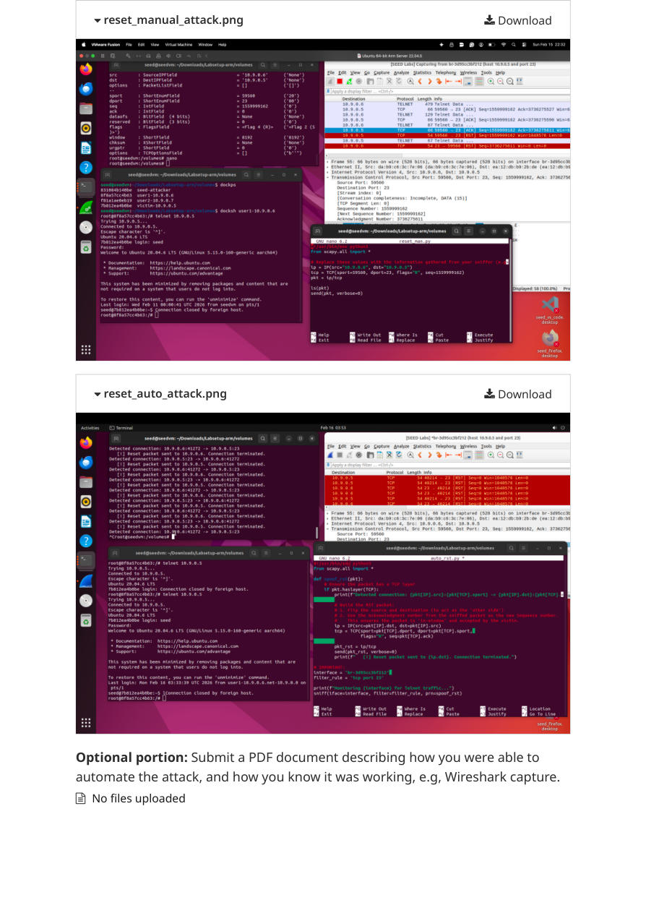

FEATURED NETWORK SECURITY LAB
TCP Protocol Security:
SYN Flooding, RST Spoofing & Session Hijacking
Analyzed TCP connection vulnerabilities in an isolated SEED Labs environment. Explored denial-of-service behavior, forged resets, session injection, and reverse-shell risks while studying mitigations such as SYN cookies and encrypted remote access.
PythonScapyCWiresharkDockerLinux
04Lab experiments
105/100Graded submission*
*Includes assignment bonus points. Results are from controlled coursework; no live reproduction was performed for this website.